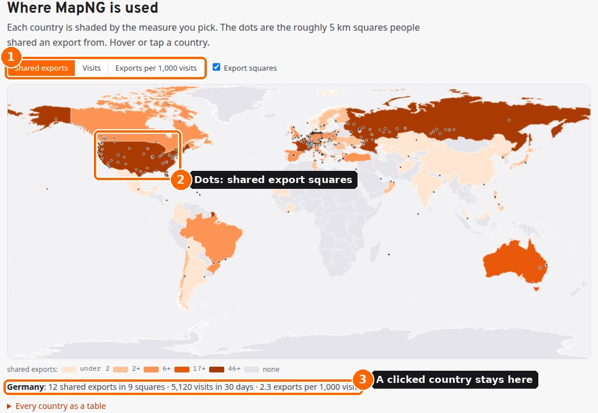
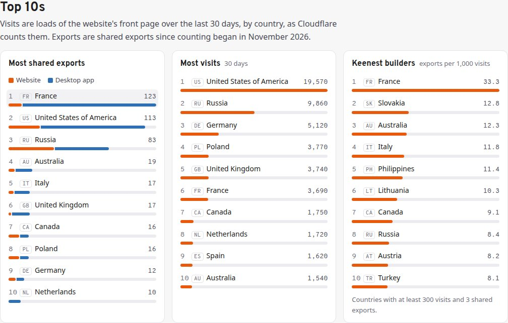
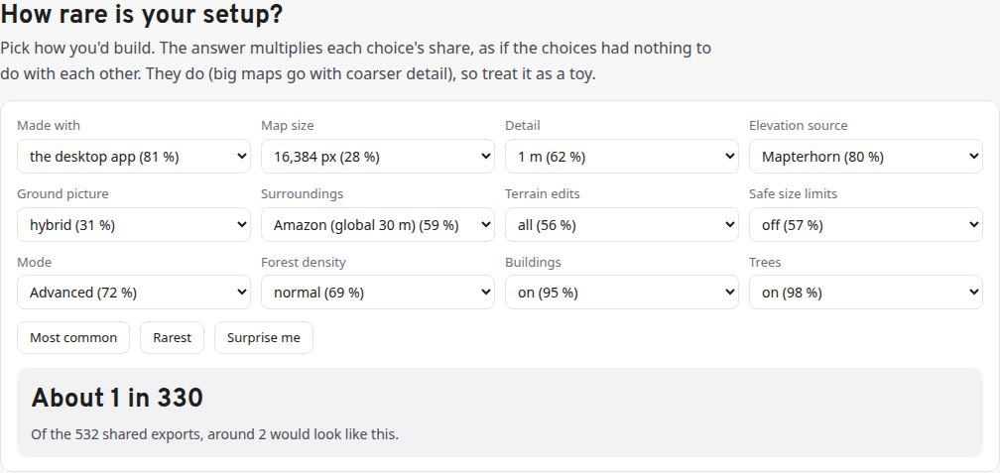
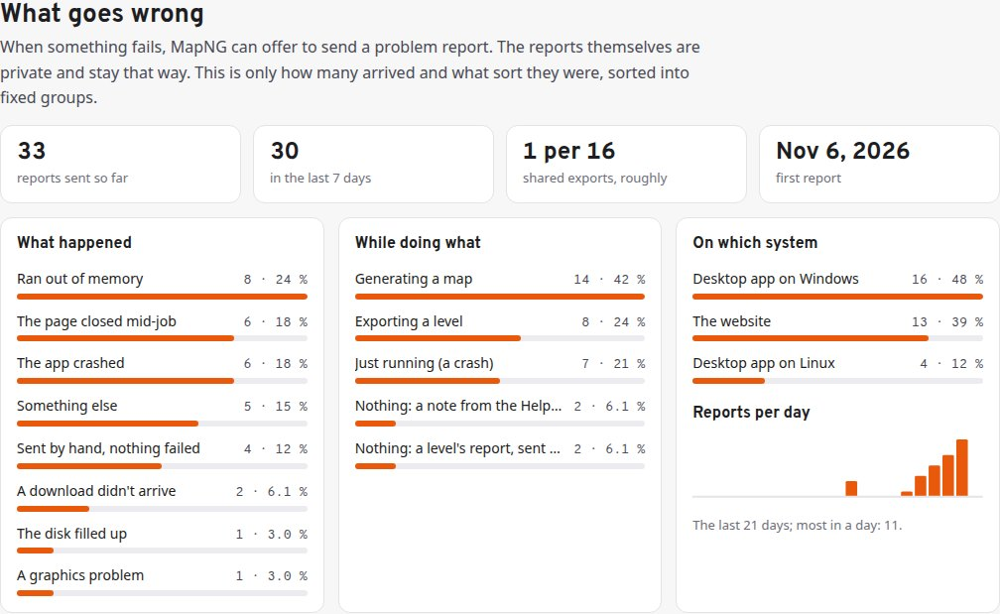
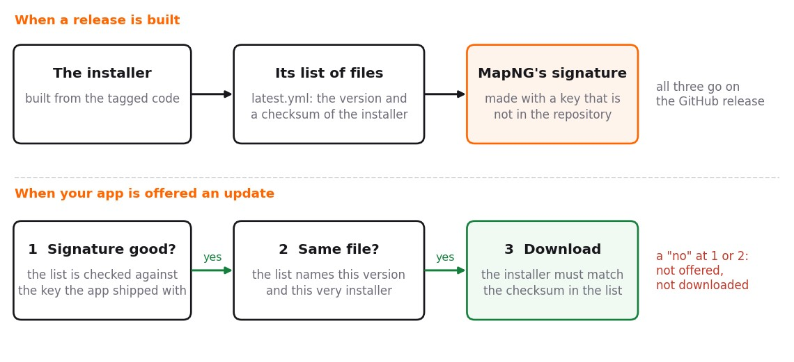
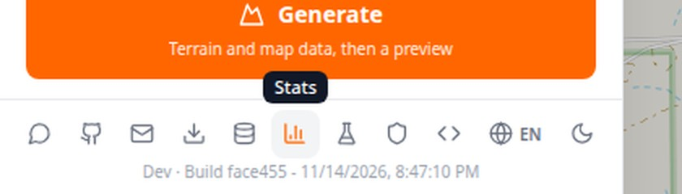

MapNG
MapNG📊 MapNG in numbers
mapng.com/stats.html is a new page of live counts. MapNG is open source and built in the open, and there was never a reason for its numbers to be private. You can reach it from the new bar-chart icon at the bottom of the control panel, next to Your data.

What is on it:
- Top 10s: the countries with the most shared exports (website and desktop app apart), the most visits, and the "keenest builders": exports per 1,000 visits.
- What people build with: the typical MapNG level in one row, the ten choices nearly everyone makes, the ten hardly anyone makes (some never), and every setting as its own little chart, with a filter.
- How rare is your setup? Pick how you build and it says about one in how many shared exports looks like yours. A toy: it treats your choices as if they had nothing to do with each other.
- Map nerdery: the northernmost and southernmost square, the busiest one, how much is north of the equator, how much is in countries that drive on the left, exports by latitude.
- Who drops by: thirty days of visitors, page views and requests, how much data was served, browsers, the days of the week.
- What goes wrong: how many problem reports arrived, what happened, during what, on which system.
- The desktop app: downloads per release and per kind.


🔒 What the stats page shows, and what it never will
Every number on the page is a count. None is about a person, and none can be turned back into one.
- Export areas and settings are there only from people who chose to share them, the same two switches as before. The two questions MapNG asks after your first export now say, in every language, that the totals are public on the stats page.
- Visits are the totals Cloudflare, which serves the site, already counts without cookies. A country is listed only from 25 visits up.
- Problem reports appear only as how many arrived, under fixed headings such as "ran out of memory". Nothing from inside a report is shown: not the place, not the error's text, not what you wrote, not the report's ID. A report itself is never public.
- Never there: a name, an account, an internet address, an exact location, a level's name, your settings as a set.
The page is drawn in your browser from three public files, which you can open yourself; they are linked at its foot. Your data and MapNG has a table of every number, where it comes from and how fine it gets.

🖥️ The app's window stays the app's
The desktop app's window has a private line to the part of the app that reads and writes files and runs exports. The security pass found that the line belonged to the window, not to MapNG's page in it: clicking the map's "OpenStreetMap" credit loaded that website into the app's window, and the website then had the same line.
- The window no longer leaves MapNG. A link to anywhere else opens in your browser.
- Every request is checked for who sent it, and turned away unless MapNG's own page did.
- Files stay in their folders. A problem report's log can only be one of MapNG's own logs (it could name any file on the computer). File names written into a job, "show in folder" and batch downloads keep to what MapNG itself makes.
- Your keys leave a job's folder when the job ends. A job's settings file held your GPXZ key in plain text for as long as the folder was kept, in the folder Help > Logs opens: the one you might zip up to show a problem. Your own Overpass server's address no longer appears in logs either.
- A content policy: the app's page runs only MapNG's own script files. A script that somehow got into the page, out of map data or a pasted config, does not run.
No sign was found that any of this had been used against anyone. Update to 0.3.2 all the same.
✍️ Updates signed by MapNG
The Windows build is not code-signed (that takes a paid certificate), so until now an update was trusted because the installer matched a checksum, and the checksum sat on the same GitHub release as the installer. Whoever could replace one could replace the other.
From this version on, every release's list of files is signed with a key that is not in the repository, and the app takes an update only if the signature is good and the list names the very installer it is about to download.

What this does not do: it does not make Windows SmartScreen stop warning about a new installer, and it does not help if GitHub's own build of MapNG were tampered with. It closes the gap where a finished release's files could be swapped.
🌐 The site serves only what the app asks for
- The pass-through routes are narrowed. mapng.com passes some requests on to other servers (the address lookup, Poland's geoportal, GPXZ) so that your browser can reach them. Those routes served the whole of each server under mapng.com's name. They now take only the paths the app uses, and nothing they answer can ever run as a page of mapng.com.
- An address lookup can no longer be answered wrongly for everyone: an extra word in the request could put a wrong answer into the site's cache for a week.
- The same content policy as the desktop app, https only from now on, and no cookies set by anything passed through.
- No keys anywhere they should not be: every key the project uses was checked against the public code, its whole history and the built site. None is there.
📝 Problem reports that keep their promise
- Unticking the location now leaves out the log too. A report sent with "include the location" unticked still carried the job's log, and the log's lines name the area. Website and desktop app: the log, the settings code and the export settings all go with the location, or not at all. This was a broken promise, and it is fixed.
- A report far too large is cut down instead of stopping the list of reports from loading; a report's text cannot pass itself off as part of the alert it sends; report files are always downloads, never pages.
🔑 Longer send codes, and a confirm window that hides nothing
- Send codes are eight characters now (like
K7F2-9QXM), up from six: from 729 million possible codes to 656 thousand million, with a limit on how often anyone may try one. A code holds a map's location, so it should not be guessable. - A config from someone else is checked before it is shown: a place on Earth, a sane scale, a drawing of bearable size.
- The confirm window always names the settings that matter (size limits off, an experimental road surface, measuring road widths from the satellite picture), whatever mode you are in, and counts every other setting the config would change.
🚦 Limits that hold
The site's limits were per internet address and lived in the server's memory, which empties whenever the server restarts. Someone with many addresses could have filled the storage, flooded the public counts, or hammered OpenStreetMap's servers in MapNG's name. Now:
- each sender is limited by Cloudflare's own rate limiter, and a home connection that cycles through addresses counts as one;
- everything that costs storage, mail or the public counts has a total for the day, for everyone together: problem reports, settings reports, send codes, new squares on the export map, elevation tiles kept for good.
Each total is far above what MapNG's users reach. If you ever meet one ("Too many requests"), wait a minute and try again.
📌 Good to know
- Desktop 0.3.1 and older cannot open the new eight-character send codes. Update, or use the long code (Copy long code), which works everywhere.
- This is the first signed release. 0.3.1 installs take this update the old way; from 0.3.2 on, every update is checked.
- Still open: a code-signing certificate for Windows; and the limits above have run in tests, not yet under real load.
- Nothing about what MapNG builds changed in this version: levels come out as in 0.3.1.

🙏 Thanks
To everyone who turned on Share my exports or Share which settings I use: the stats page is made of your counts, and nothing else of you. And to everyone who pressed Send report: a quarter of you told us the same thing, and it is first on the list for the next update.